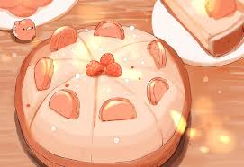

Home
Raspberry Cake

Ingredients:
- 1 (9 inch) angel food cake
- 2 (3 ounce) packages raspberry-flavored gelatin mix (such as Jell-O®)
- 1 ¼ cups boiling water
- 1 (15 ounce) package frozen raspberries in syrup, thawed and undrained
- 1 pint heavy whipping cream
Steps:
- Butter a 9-inch tube pan. Break angel food cake into chunks; set aside.
- Stir raspberry gelatin and boiling water together in a bowl until gelatin is dissolved; place gelatin in the refrigerator to cool slightly, about 10 minutes. Stir raspberries with syrup into gelatin.
- Beat cream in a chilled glass or metal bowl with an electric mixer until soft peaks form; fold whipped cream into raspberry mixture.
- Pour about 1/4 cup of raspberry mixture into prepared pan. Place 1/3 of cake chunks into pan; pour 1/3 of remaining raspberry mixture over cake. Repeat layering with remaining ingredients, ending with the raspberry mixture. Chill in refrigerator until firm, about 2 hours.
- To remove from pan, center a serving plate over tube pan; invert.